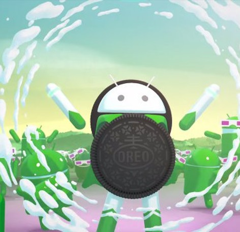
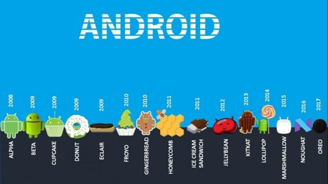

Evoluzione Mobile: Focus su Android 8 Oreo
Durante l'anno abbiamo svolto diverse attività, ma l'evoluzione dei sistemi operativi mobili è uno degli argomenti che mi è piaciuto di più. Nello specifico, l'elaborato analizza Android 8, rilasciato da Google nel 2017 e storicamente noto con il nome commerciale "Oreo", seguendo la tradizione alfabetica legata ai dolci.
Il focus principale si è concentrato sull'ottimizzazione generale e sul superamento dei limiti strutturali della versione precedente, riassumibile in quattro macro-aree:
- Prestazioni e Batteria: Android 8 ha introdotto un avvio del sistema molto più rapido e una gestione stringente dei servizi in background. Limitando i processi energetici delle app non necessarie, riduce il consumo di memoria e garantisce una maggiore durata della batteria.
- Interfaccia Grafica e Personalizzazione: Il design è stato reso più pulito e minimale, arricchito da animazioni fluide. La novità estetica principale è rappresentata dalle icone adattive, capaci di uniformarsi automaticamente a forme e dimensioni diverse a seconda del launcher o del dispositivo utilizzato.
- Esperienza Utente e Notifiche: Il sistema ha rivoluzionato la gestione dei flussi introducendo i canali di notifica, la funzione di snooze (per rimandarli) e i notification dots sulle icone delle app. A livello di usabilità sono state integrate funzioni fondamentali come il Picture-in-Picture e la compilazione automatica tramite Autofill.
- Sicurezza del Sistema: Sul piano della protezione dati è stato introdotto Google Play Protect per il monitoraggio automatico dei malware, affiancato da un controllo più granulare dei permessi concessi alle applicazioni e da una maggiore frequenza nel rilascio delle patch di sicurezza.
In conclusione, Android 8 Oreo ha rappresentato una pietra miliare nello sviluppo mobile, definendo i pilastri di efficienza e usabilità su cui poggia l'intero ecosistema Android moderno.

